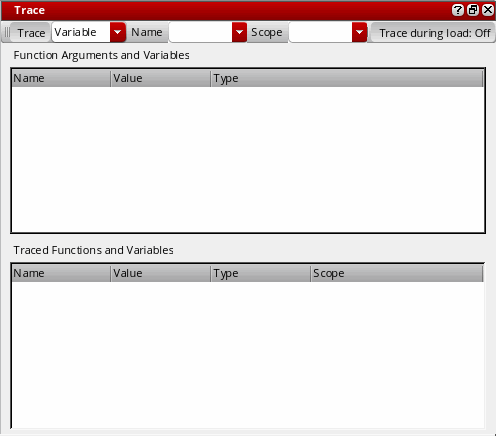
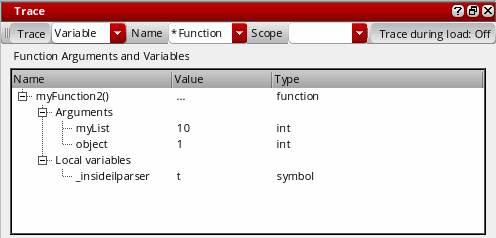
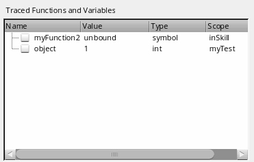

Functions and Variables Tracing
The values of functions and variables in your code might change as you run the code. For such functions and variables, rather than watching the values in tooltips, you can use the Trace assistant to view the changing values. Using the Trace assistant, you can continually inspect the values of functions and variables as you step through the program, and view their scope. You can also view the functions that are on top of the call stack, along with their arguments and local variables.
As the program progresses, variables go in and out of scope. The scope information is useful to trace variables that are defined with same name within different scopes in a program. For such variables, Trace assistant displays the values of the variable in different scopes.
Tracking Function Calls
When your program stops at a breakpoint, the information about the function on the top of the call stack is displayed in the Trace assistant window. This information includes the arguments of the function in the stack frame as well as the local variables. When a new function is called, it gets added to the top of the call stack and the current function returns to the caller, and thus gets removed from the top of the call stack. To track function calls:
-
Choose Window – Assistants – Trace. The Trace assistant displays to the right of the source code pane and is initially empty.
By default, tracing is disabled during file load operations. Consequently, the trace functionality will be disabled if you reload a file that is currently open in the SKILL IDE editor but has been edited using some other editor. To enable tracing during file load, click Trace during load: Off -
Execute a function in your code. The Function Arguments and Variables section of the Trace assistant window gets updated with the name of the function on top of the call stack, along with its arguments, local variables, and their values.
The values in the Function Arguments and Variables section will change as you step through the rest of the program statements.
To stop tracking the function, select the function and choose Clear from the context menu.
Tracking Changes in Program Variables
To monitor the changes in your program variables as your program executes, you can select the variables from the source code pane and add them to the Trace assistant. To trace a variable:
-
Choose Window – Assistants – Trace. The Trace assistant displays to the right of the source code pane and is initially empty because you are yet to add a trace variable or function.
-
Select Variable or Function from the Trace drop-down list box and then, specify the name of the variable or function to be traced in the Name drop-down list box. If you are tracing a variable, you can specify the scope of the traced variable in the Scope drop-down list box.
Alternatively, select the variable or function that you want to trace in the source code pane and right-click and choose Trace from the context-menu.
You can use regular expressions in the Name drop-down list box, so that all functions or variables that match that expression are traced.
The name, value, data type, and scope of the selected variable or function display in the Traced Functions and Variables section of the Trace assistant window. The values of these variables are updated as you step through your program.
 - Select the check box next to the name of a variable to add it to watch list, so that you can track when the value of the variable changes.
-
To remove a variable from the Trace assistant, select the variable in the Trace assistant and choose Untrace Selected or Untrace Selected (All Scopes) from the context menu.
Untrace All removes all functions and variables from the Trace assistant.
Changing Variable Values
To edit the values of variables at runtime by using the Trace assistant:
- While the program is still in the debug mode, choose Window – Assistants – Trace to display the Trace assistant.
-
Double-click a variable value to edit it. Type a new value for the variable and press
Enter.
You can also place the pointer over a variable in the source code pane and click the tooltip to change its value. PressEscto discard the edits.
Related Topics
SKILL IDE Scope Information
SKILL IDE uses scope information to determine the value of a variable. Scope defines the visibility of a variable within a code block. As the program progresses from one code block to another, the visibility of the variables defined in the code blocks changes. If a variable is defined inside a function or procedure block, its scope is said to be local to that function or procedure block. If however, the variable is defined at the program level, it has a global scope.
When the debugger hits a function breakpoint, the values of the traced variables within the current scope display. When the execution control exits the function block, the variables local to that function block go out of scope.
Because the debugger uses the scope information to determine the value of a variable, it is possible to have both global and local variables with the same name. For example, in the sample program given below, variable x is used at two places, both in function testBreakpoints() and testBreak().
* Sample program- Understanding the scope of variables
********************************************************/
(defun testBreakpoints (x)
(if x==0 then
printf("end of recursion\n")
else
(testBreak x = (abs x) - 1)
)
x
)
(defun A()
(for i 1 50
(testBreakpoints i)
)
)
(defun B()
(testBreakpoints -2)
(testBreakpoints nil)
)
(defun testBreak (x)
(if x==0 then
printf("end of recursion\n")
else
(testBreakpoints x = (abs x) - 1)
)
x
)
To see how the scope of a variable changes with respect to the function currently being executed, set the entry and exit condition for both the functions (testBreakpoints() and testBreak()) to t. Call testBreakpoints() with the value 9 and then trace the variable x.
Observe the value and scope of x as it changes with respect to the function currently being executed.
Related Topics
Efficiency Improvement of SKILL Code
Examining and Modifying Variable Values
Functions and Variables Tracing
Return to top